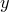
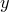

set view <theta>, <phi>
The set view command is used to specify the angle from which three-dimensional plots are viewed. It should be followed by two angles, which can either be expressed in degrees, as dimensionless numbers, or as quantities with physical units of angle:
set view 60,30 set unit angle nodimensionless set view unit(0.1*rev),unit(2*rad)
The orientation  corresponds to having the
corresponds to having the  -axis horizontal, the
-axis horizontal, the  -axis vertical, and the -axis directed into the page. The first angle supplied to the set view command rotates the plot in the
-axis vertical, and the -axis directed into the page. The first angle supplied to the set view command rotates the plot in the  plane, and the second angle tips the plot up in the plane containing the -axis and the normal to the user’s two-dimensional display.
plane, and the second angle tips the plot up in the plane containing the -axis and the normal to the user’s two-dimensional display.